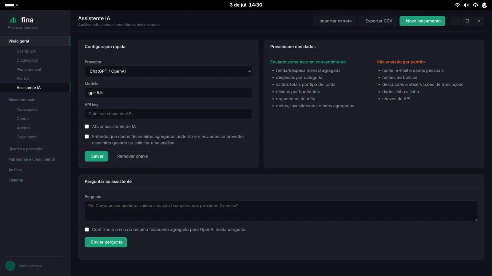

Organize o presente, saia das dívidas e faça o patrimônio crescer.
O Fina é um gerenciador de finanças pessoais para o seu computador. Ele mostra onde está o seu dinheiro, sugere um plano para quitar dívidas e acompanha a sua evolução, mês a mês.

Por que o Fina
Mais que uma planilha de gastos
O Fina foi criado para ajudar você a enxergar a sua situação financeira e a encontrar o próximo passo.
Enxergue
Dashboard, diagnóstico e score de saúde financeira mostram para onde o dinheiro vai e quanto sobra no fim do mês.
Saia das dívidas
Compare estratégias de quitação, simule a economia de juros e registre acordos de renegociação com as parcelas já agendadas.
Cresça
Monte a reserva de emergência, defina metas, acompanhe investimentos e simule o patrimônio futuro e a aposentadoria.
Recursos
Tudo o que você precisa num só lugar
Mais de 30 telas organizadas pela sua jornada: do controle do dia a dia ao planejamento de longo prazo.
Lançamentos
Receitas, despesas e transferências, parcelas no cartão, rateio entre meios de pagamento e categorias com subcategorias.
Importação de extratos
Importe CSV e OFX com sugestão automática de categoria a partir do seu próprio histórico.
Leitura de comprovantes
Fotografe uma nota fiscal e o OCR preenche o lançamento, processado 100% no seu computador.
Agenda e fixas
Contas a pagar e receber, recorrências automáticas e detecção de assinaturas esquecidas.
Orçamento
Limites mensais por categoria, com alertas e modo envelope, que transporta o saldo não gasto para o mês seguinte.
Plano mensal
Uma sugestão de como dividir a sobra entre dívidas, reserva, metas e investimentos.
Previsão de saldo
Projeção até o fim do mês e para os próximos 30 dias, com os lançamentos que mais pesam.
Alertas inteligentes
Gastos fora do padrão, possíveis duplicidades, aumento de preço em assinaturas e quedas bruscas de saldo.
Plano de saída
Estratégias de quitação lado a lado, com o tempo e os juros de cada uma.
Renegociação
Priorize credores, gere um rascunho de proposta e acompanhe cada parcela do acordo.
Investimentos e bens
Carteira com alocação e rendimento, imóveis, veículos e outros bens num patrimônio consolidado.
IRPF
Um informe auxiliar com rendimentos, deduções, bens e dívidas para a declaração.
Open Finance
Conecte bancos via Pluggy, Belvo ou Klavi e sincronize contas, saldos e lançamentos.
Assistente IA
Perguntas, resumos e lançamentos em linguagem natural com ChatGPT ou Gemini, usando a sua própria chave.
Modo família
Separe lançamentos por responsável e acompanhe as finanças do casal ou da casa.
Sincronização
Leve seus dados entre computadores com um arquivo criptografado na sua própria nuvem.
Privacidade
Seu dinheiro, seus dados
O Fina não tem servidor próprio. Tudo fica num banco de dados no seu computador, e nada sai dele sem que você peça.
- Banco SQLite local, com criptografia opcional por senha mestre
- Credenciais de IA e Open Finance guardadas com a criptografia do sistema
- IA desligada por padrão; quando ativada, pede consentimento a cada envio
- Código aberto: qualquer pessoa pode auditar o que o app faz
Baixar
Instale em poucos minutos
Escolha o seu sistema. Os pacotes são gerados automaticamente a cada nova versão.
Use o repositório no openSUSE Build Service. O pacote é atualizado a cada nova versão. Para Leap, troque openSUSE_Tumbleweed por openSUSE_Leap_16.0 ou openSUSE_Leap_16.1.
sudo zypper addrepo --refresh \ https://download.opensuse.org/repositories/home:/rodrigosbrito:/fina/openSUSE_Tumbleweed/home:rodrigosbrito:fina.repo \ fina-obs sudo zypper refresh sudo zypper install fina
O instalador detecta a sua distribuição e baixa o pacote .rpm ou .deb da versão mais recente.
curl -fsSL https://raw.githubusercontent.com/w3ti/Fina/main/scripts/install.sh | sudo bash
Prefere instalar à mão? Baixe o .rpm ou o .deb na página de releases.
Baixe o instalador .exe na página de releases e execute-o. Compatível com Windows 10 e 11 (x64).
Código aberto
Feito no Brasil, aberto para todos
O Fina é software livre sob a licença GPL-3.0. Relate problemas, sugira melhorias ou contribua com código.